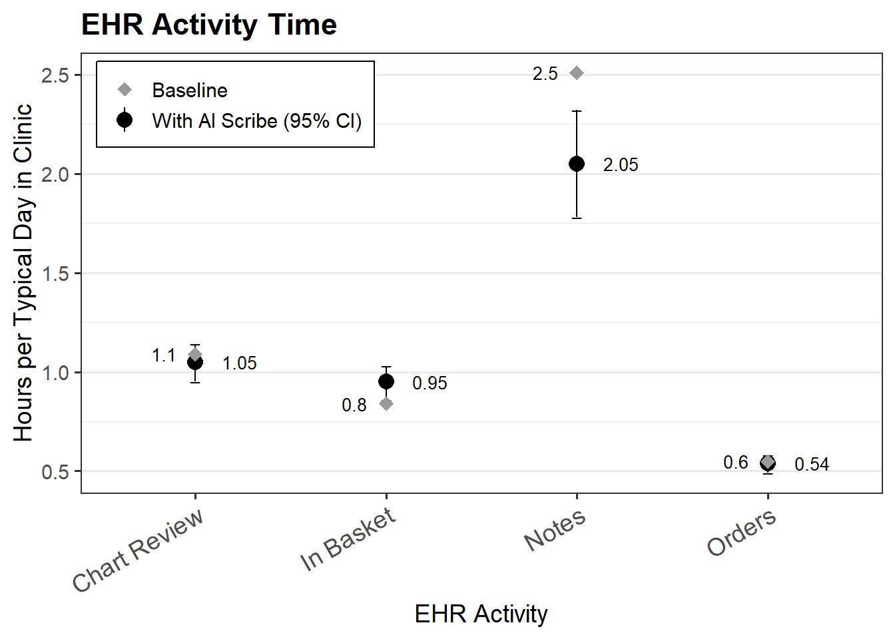
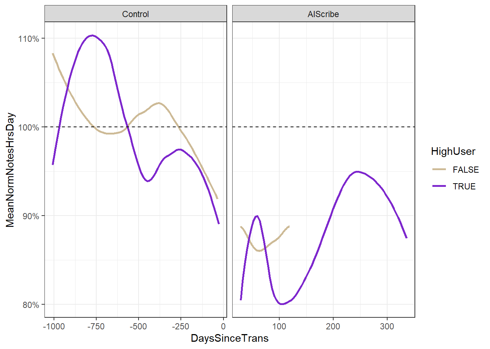

LMAllNotes <- SignalRaw |>filter(Metric =="Time in Notes per Appointment") |>filter(GroupData !="Transition") |>select(StudyID, Value, GroupData, Denominator) |>mutate(ValueD = Value *20/60)#a models will be for time per appointment (mins)#d models will be for time per typical full clinic day (hours)LMNotesAppa <-lmer(formula = Value ~ (GroupData) + (1|StudyID), data=LMAllNotes)summary(LMNotesAppa)
Linear mixed model fit by REML. t-tests use Satterthwaite's method [
lmerModLmerTest]
Formula: Value ~ (GroupData) + (1 | StudyID)
Data: LMAllNotes
REML criterion at convergence: 3808.5
Scaled residuals:
Min 1Q Median 3Q Max
-3.4908 -0.1871 -0.0505 0.1464 15.0448
Random effects:
Groups Name Variance Std.Dev.
StudyID (Intercept) 48.39 6.957
Residual 12.60 3.550
Number of obs: 691, groups: StudyID, 21
Fixed effects:
Estimate Std. Error df t value Pr(>|t|)
(Intercept) 7.5428 1.5253 19.9908 4.945 7.81e-05 ***
GroupDataAIScribe -1.3853 0.4052 669.1705 -3.418 0.000668 ***
---
Signif. codes: 0 '***' 0.001 '**' 0.01 '*' 0.05 '.' 0.1 ' ' 1
Correlation of Fixed Effects:
(Intr)
GrpDtAIScrb -0.036
LMAllCR <- SignalRaw |>filter(Metric =="Time in Clinical Review per Appointment") |>filter(GroupData !="Transition") |>select(StudyID, Value, GroupData, Denominator) |>mutate(ValueD = Value *20/60)#a models will be for time per appointment (mins)#d models will be for time per typical full clinic day (hours)LMCRAppa <-lmer(formula = Value ~ (GroupData) + (1|StudyID), data=LMAllCR)LMCRcoefa <-tidy(LMCRAppa, effects ="fixed") |>mutate(Units ="Minutes per Appointment")LMCRAppd <-lmer(formula = ValueD ~ (GroupData) + (1|StudyID), data=LMAllCR)LMCRcoefd <-tidy(LMCRAppd, effects ="fixed") |>mutate(Units ="Hours per Typical Day") LMCRcoef <-rbind(LMCRcoefd, LMCRcoefa) |>mutate(EHRActivity ="Chart Review") LMCRcoef |>gt() |>data_color(columns = p.value,method ="bin",palette =c("green","yellow","red"),bins=c(1.0,0.15,0.05,0))
effect
term
estimate
std.error
statistic
df
p.value
Units
EHRActivity
fixed
(Intercept)
1.08865451
0.15582321
6.9864723
20.02562
8.778349e-07
Hours per Typical Day
Chart Review
fixed
GroupDataAIScribe
-0.04190946
0.04753505
-0.8816537
669.26213
3.782806e-01
Hours per Typical Day
Chart Review
fixed
(Intercept)
3.26596352
0.46746962
6.9864723
20.02562
8.778349e-07
Minutes per Appointment
Chart Review
fixed
GroupDataAIScribe
-0.12572837
0.14260516
-0.8816537
669.26213
3.782806e-01
Minutes per Appointment
Chart Review
Time in Orders
Code
LMAllOrders <- SignalRaw |>filter(Metric =="Time in Orders per Appointment") |>filter(GroupData !="Transition") |>select(StudyID, Value, GroupData, Denominator) |>mutate(ValueD = Value *20/60)#a models will be for time per appointment (mins)#d models will be for time per typical full clinic day (hours)LMOrdersAppa <-lmer(formula = Value ~ (GroupData) + (1|StudyID), data=LMAllOrders)LMOrderscoefa <-tidy(LMOrdersAppa, effects ="fixed") |>mutate(Units ="Minutes per Appointment")LMOrdersAppd <-lmer(formula = ValueD ~ (GroupData) + (1|StudyID), data=LMAllOrders)LMOrderscoefd <-tidy(LMOrdersAppd, effects ="fixed") |>mutate(Units ="Hours per Typical Full Clinic Day")LMOrderscoef <-rbind(LMOrderscoefd, LMOrderscoefa) |>mutate(EHRActivity ="Orders")LMOrderscoef|>gt() |>data_color(columns = p.value,method ="bin",palette =c("green","yellow","red"),bins=c(1.0,0.15,0.05,0))
effect
term
estimate
std.error
statistic
df
p.value
Units
EHRActivity
fixed
(Intercept)
0.54523176
0.06796855
8.0218240
20.04338
1.100448e-07
Hours per Typical Full Clinic Day
Orders
fixed
GroupDataAIScribe
-0.01466079
0.02419193
-0.6060198
669.36484
5.447070e-01
Hours per Typical Full Clinic Day
Orders
fixed
(Intercept)
1.63569529
0.20390566
8.0218240
20.04338
1.100448e-07
Minutes per Appointment
Orders
fixed
GroupDataAIScribe
-0.04398237
0.07257579
-0.6060198
669.36484
5.447070e-01
Minutes per Appointment
Orders
Time in In Basket
Code
LMAllIB <- SignalRaw |>filter(Metric =="Time in In Basket per Appointment") |>filter(GroupData !="Transition") |>select(StudyID, Value, GroupData, Denominator) |>mutate(ValueD = Value *20/60)#a models will be for time per appointment (mins)#d models will be for time per typical full clinic day (hours)LMIBAppa <-lmer(formula = Value ~ (GroupData) + (1|StudyID), data=LMAllIB)LMIBcoefa <-tidy(LMIBAppa, effects ="fixed") |>mutate(Units ="Minutes Per Appointment")LMIBAppd <-lmer(formula = ValueD ~ (GroupData) + (1|StudyID), data=LMAllIB)LMIBcoefd <-tidy(LMIBAppd, effects ="fixed") |>mutate(Units ="Hours per Typical Full Clinic Day") LMIBcoef <-rbind(LMIBcoefd, LMIBcoefa)|>mutate(EHRActivity ="In Basket") LMIBcoef |>gt() |>data_color(columns = p.value,method ="bin",palette =c("green","yellow","red"),bins=c(1.0,0.15,0.05,0))
effect
term
estimate
std.error
statistic
df
p.value
Units
EHRActivity
fixed
(Intercept)
0.8425757
0.13466306
6.256918
20.05608
4.086089e-06
Hours per Typical Full Clinic Day
In Basket
fixed
GroupDataAIScribe
0.1069484
0.04296002
2.489487
669.31419
1.303446e-02
Hours per Typical Full Clinic Day
In Basket
fixed
(Intercept)
2.5277272
0.40398919
6.256918
20.05608
4.086089e-06
Minutes Per Appointment
In Basket
fixed
GroupDataAIScribe
0.3208453
0.12888006
2.489487
669.31419
1.303446e-02
Minutes Per Appointment
In Basket
Code
LMIBcoef
# A tibble: 4 × 9
effect term estimate std.error statistic df p.value Units EHRActivity
<chr> <chr> <dbl> <dbl> <dbl> <dbl> <dbl> <chr> <chr>
1 fixed (Intercep… 0.843 0.135 6.26 20.1 4.09e-6 Hour… In Basket
2 fixed GroupData… 0.107 0.0430 2.49 669. 1.30e-2 Hour… In Basket
3 fixed (Intercep… 2.53 0.404 6.26 20.1 4.09e-6 Minu… In Basket
4 fixed GroupData… 0.321 0.129 2.49 669. 1.30e-2 Minu… In Basket
Publication Table - Changes in Time Acivity Table both Appt and typical full day
#Need to run all of the Time in Activity code chunnks DataActAll<-rbind(LMCRcoef, LMNotescoef, LMIBcoef, LMOrderscoef) |>mutate(Group =if_else(str_detect(term, "ribe"),"With AI Scribe", "Baseline"),Value =round(estimate,2),UCL =round((estimate+2*std.error), 2),LCL =round((estimate-2*std.error), 2),pValue =round (p.value, 4) ) |>select(Units:pValue) Results_SignalChanges <- DataActAll|>mutate(AIScribeDelta =str_c(as.character(Value)," (",as.character(LCL),", ",as.character(UCL),") p value = ",as.character(pValue))) |>select(EHRActivity,Group,AIScribeDelta,Units) |>pivot_wider(names_from = Group,values_from = AIScribeDelta) |>mutate(Baseline =str_sub(Baseline,start =1L,end =4L))
colorselect <-"black"ggplot(DataPlotScribe, aes(x = EHRActivity, y = Value)) +# AI Scribe as point + CI whiskersgeom_pointrange(data = DataPlotScribe |>filter(Group =="With AI Scribe"),aes(ymin = LCL,ymax = UCL,shape ="With AI Scribe (95% CI)" ),size =0.9,color = colorselect) +geom_point( aes(x = EHRActivity, y = LCL),shape =95,size =3,color = colorselect ) +geom_point( aes(x = EHRActivity, y = UCL),shape =95,size =3,color = colorselect ) +geom_point(aes(x = EHRActivity,y = Baseline,shape ="Baseline" ),size =3.5,color ="gray60") +geom_text(data = DataPlotScribe,aes(label =round(Value, 2 )),hjust =-.75, # move text above the right pointsize =3.5,color = colorselect)+geom_text(data = DataPlotScribe,aes(x = EHRActivity, y = Baseline, label =round(Baseline, 1)),hjust =1.75, # move text above the right pointsize =3.5,color ="black")+labs(x ="EHR Activity",y ="Hours per Typical Day in Clinic",title ="EHR Activity Time",shape ="Group" ) +scale_shape_manual(name =NULL,values =c("Baseline"=18,"With AI Scribe (95% CI)"=16 )) +theme_bw( base_size =14) +theme(panel.grid.major.x =element_blank(),panel.grid.minor.x =element_blank(),axis.text.x =element_text(size =14,angle =30,hjust =1 ),plot.title =element_text(face ="bold"),legend.position ="inside",legend.position.inside =c(0.02, 0.98),legend.justification =c(0, 1),legend.background =element_rect(color ="black",fill ="white",linewidth =0.5 ))

ggsave("BW DIfference in difference -minutes per appoint.jpg",device ="jpeg",path ="C://Users//jpgil//OneDrive//Research - Primary//Epic//Abridge OTO//Abridge OTO Analysis//Figures", dpi ="retina", units ="in", height =5,width =5 )
Time in Notes by TYPE of Visit
I didn’t use this we didn’t have enough visit to approach signficance though it appeared to help new visits more. ### Model - Just not enough data points in AI Scribe
Code
TimeInNotesAll <- SignalRaw |>filter(Metric =="Time in Notes per Appointment") |>select(-Metric)VisitsPerMo1 <- VisitsRaw |>mutate(StartDate =case_when( Date <="2022-12-31"~"2022-11-27", Date <="2023-01-28"~"2023-01-01", Date <="2023-02-25"~"2023-01-29", Date <="2023-03-25"~"2023-02-26", Date <="2023-04-29"~"2023-03-26", Date <="2023-05-27"~"2023-04-30", Date <="2023-06-24"~"2023-05-28", Date <="2023-07-29"~"2023-06-25", Date <="2023-08-26"~"2023-07-30", Date <="2023-09-30"~"2023-08-27", Date <="2023-10-28"~"2023-10-01", Date <="2023-11-25"~"2023-10-29", Date <="2023-12-30"~"2023-11-26", Date <="2024-01-27"~"2023-12-31", Date <="2024-02-24"~"2024-01-28", Date <="2024-03-30"~"2024-02-25", Date <="2024-04-27"~"2024-03-31", Date <="2024-05-25"~"2024-04-28", Date <="2024-06-29"~"2024-05-26", Date <="2024-07-27"~"2024-06-30", Date <="2024-08-31"~"2024-07-28", Date <="2024-09-28"~"2024-09-01", Date <="2024-10-26"~"2024-09-29", Date <="2024-11-30"~"2024-10-27", Date <="2024-12-28"~"2024-12-01", Date <="2025-01-25"~"2024-12-29", Date <="2025-02-22"~"2025-01-26", Date <="2025-03-29"~"2025-02-23", Date <="2025-04-26"~"2025-03-30", Date <="2025-05-31"~"2025-04-27", Date <="2025-06-28"~"2025-06-01", Date <="2025-07-26"~"2025-06-29", Date <="2025-08-30"~"2025-07-27", Date <="2025-09-27"~"2025-08-31", Date <="2025-10-25"~"2025-09-28", Date <="2025-11-29"~"2025-10-26", Date <="2025-12-27"~"2025-11-30", Date <="2026-01-31"~"2025-12-28", T~NA))VisitsPerMo <- VisitsPerMo1 |>group_by(StudyID,StartDate) |>summarise(New =sum(NEW, na.rm =T),#Return did not differ from telemed so we combine themReturn =sum(RETURN,TELEMED, na.rm =T),Other =sum(OTHER, na.rm = T),Total =sum(NEW, RETURN, OTHER, TELEMED, na.rm = T)) |>filter(Total>19) |>filter(!is.na(StartDate))VisitsPerMo$StartDate <-ymd(VisitsPerMo$StartDate, tz ="UTC")TimeInNotesLM <- TimeInNotesAll |>left_join(VisitsPerMo,join_by(StudyID, StartDate)) |>left_join(KeyUserHigh)NotesData4LMEM = TimeInNotesLM |>filter(GroupData !="Transition") |>filter(HighUser)NotesData4LMEM$StudyID <-as_factor(NotesData4LMEM$StudyID)NotesControlLMEM <-lmer(formula = Numerator ~ (New)*(GroupData) + (Return)*GroupData + (Other)*GroupData + (1|StudyID), data=NotesData4LMEM)summary(NotesControlLMEM)
Linear mixed model fit by REML. t-tests use Satterthwaite's method [
lmerModLmerTest]
Formula: Numerator ~ (New) * (GroupData) + (Return) * GroupData + (Other) *
GroupData + (1 | StudyID)
Data: NotesData4LMEM
REML criterion at convergence: 2593.2
Scaled residuals:
Min 1Q Median 3Q Max
-3.5311 -0.3335 -0.0123 0.3309 4.4928
Random effects:
Groups Name Variance Std.Dev.
StudyID (Intercept) 356687 597.2
Residual 35436 188.2
Number of obs: 196, groups: StudyID, 6
Fixed effects:
Estimate Std. Error df t value Pr(>|t|)
(Intercept) 362.967 249.741 5.435 1.453 0.2013
New 7.662 1.416 185.154 5.412 1.92e-07 ***
GroupDataAIScribe -59.389 120.653 183.044 -0.492 0.6231
Return 2.023 1.173 184.866 1.724 0.0863 .
Other 2.784 2.670 184.868 1.043 0.2984
New:GroupDataAIScribe 4.670 4.615 183.155 1.012 0.3130
GroupDataAIScribe:Return -3.167 2.531 183.096 -1.251 0.2125
GroupDataAIScribe:Other 4.075 7.319 183.108 0.557 0.5783
---
Signif. codes: 0 '***' 0.001 '**' 0.01 '*' 0.05 '.' 0.1 ' ' 1
Correlation of Fixed Effects:
(Intr) New GrDAIS Return Other N:GDAI GDAIS:R
New -0.049
GrpDtAIScrb -0.052 -0.063
Return -0.097 -0.495 0.204
Other -0.085 -0.206 0.067 -0.155
Nw:GrpDtAIS -0.012 -0.087 0.328 0.037 0.140
GrpDtAISc:R 0.035 0.156 -0.762 -0.257 -0.049 -0.620
GrpDtAISc:O 0.022 0.089 -0.500 -0.057 -0.175 -0.756 0.373
High Likelihood of 90% same day closure in High users
`summarise()` has grouped output by 'StudyID', 'StartDate'. You can override
using the `.groups` argument.
Adding missing grouping variables: `StartDate`
Joining with `by = join_by(StudyID)`
Joining with `by = join_by(StudyID)`
Joining with `by = join_by(StudyID)`
`summarise()` has grouped output by 'HighUser', 'GroupData', 'MoSinceTrans'.
You can override using the `.groups` argument.
Warning in simpleLoess(y, x, w, span, degree = degree, parametric =
parametric, : reciprocal condition number 1.6808e-16
Warning in simpleLoess(y, x, w, span, degree = degree, parametric =
parametric, : There are other near singularities as well. 4.4739
Publication: BW Ridge Plot
ggplot(data = NormalizedData, aes(x = MeanNormPjHrsDay,y =reorder(GroupDataLab,desc(GroupDataLab)), fill = GroupDataLab )) +stat_density_ridges(bandwidth =0.08, scale =1.25, size =1.25, color ="white",quantile_lines = T,quantiles =2, show.legend = F )+scale_fill_manual(values =c("grey75", "black"))+labs(x ="% of Baseline Mean", y =" ") +scale_x_continuous(labels =percent_format() ) +coord_cartesian(xlim =c (0,2))+facet_wrap(vars(HighUserG),nrow =2)+labs(title ="B - Distribution of WAWH Before and After AI Scribes" ) +theme_bw(base_size =14)
ggplot(data = NormalizedData, aes(x = MeanNormPjHrsDay,y =reorder(GroupDataLab,desc(GroupDataLab)), fill = GroupDataLab )) +stat_density_ridges(bandwidth =0.08, scale =1.25, size =1.25, color ="white",quantile_lines = T,quantiles =2, show.legend = F )+scale_fill_manual(values =c("#FFC700","#5d348b"))+labs(x ="% of Baseline Mean", y =" ") +scale_x_continuous(labels =percent_format() ) +coord_cartesian(xlim =c (0,2))+facet_wrap(vars(HighUserG),nrow =2)+labs(title ="B - Distribution of WAWH Before and After AI Scribes" ) +theme_bw(base_size =14)
ggplot(NormalizedData, aes(x= HighUser, y=MeanNormPjHrsDay, color = HighUser))+geom_violin(trim=T,draw_quantiles =0.5, size =1.0)+geom_jitter(size=2, width =0.2, alpha =0.5)+geom_hline(yintercept =1.0,linetype =2)+scale_color_manual(values =c("#5d348b","#FFC700"))+facet_wrap(vars(GroupData), scales ="fixed")+scale_y_continuous(labels =percent_format() ) +labs(title ="Normalized time Saved Following AI Scribe Launch ",x ="User is High User",y ="% of baseline activity", ) +theme_bw()+theme(title =element_text(size =14, face ="bold"),axis.text =element_text(size =14, face = ), strip.text =element_text(size =12, face ="bold"))
Warning: Using `size` aesthetic for lines was deprecated in ggplot2 3.4.0.
ℹ Please use `linewidth` instead.
Notes
#| echo: false#| message: false#| warning: false#| code-fold: true#need to run PJ WowhGraphNotesData <- SignalRaw |>filter(Metric =="Time in Notes per Day")|>filter(GroupData !="Transition") |>group_by(StudyID,StartDate,GroupData) |>summarise(Notesmontly =sum(Numerator,na.rm =T)) |>left_join(KeyDenominator, join_by(StudyID,StartDate)) |>mutate(HrsPerDay = Notesmontly*20/`per Appointment`/60) |>select(StudyID, Notesmontly, GroupData, HrsPerDay)
`summarise()` has grouped output by 'StudyID', 'StartDate'. You can override
using the `.groups` argument.
Adding missing grouping variables: `StartDate`
Joining with `by = join_by(StudyID)`
Joining with `by = join_by(StudyID)`
Joining with `by = join_by(StudyID)`
`summarise()` has grouped output by 'HighUser', 'GroupData', 'DaysSinceTrans'.
You can override using the `.groups` argument.
Warning in simpleLoess(y, x, w, span, degree = degree, parametric =
parametric, : reciprocal condition number 1.3098e-16
Warning in simpleLoess(y, x, w, span, degree = degree, parametric =
parametric, : There are other near singularities as well. 4026.5

Ridge Plot BW
ggplot(data = NormalizedDataN, aes(x = MeanNormNotesHrsDay,y =reorder(GroupDataLab,desc(GroupDataLab)), fill = GroupDataLab )) +stat_density_ridges(bandwidth =0.05, scale =1.25, size =1.25, color ="white",quantile_lines = T,quantiles =2, show.legend = F )+scale_fill_manual(values =c("grey75", "black"))+labs(x ="% of Baseline Mean", y =" ") +scale_x_continuous(labels =percent_format(),n.breaks =7 ) +coord_cartesian(xlim =c (0.4,1.75))+facet_wrap(vars(HighUserG),nrow =2)+labs(title ="A - Distribution of Time in Notes Before and After AI Scribes" ) +theme_bw(base_size =14)
Warning: Removed 6 rows containing non-finite outside the scale range
(`stat_density_ridges()`).
ggsave("BW Ridge - Notes Means.jpg",device ="jpeg",path ="C://Users//jpgil//OneDrive//Research - Primary//Epic//Abridge OTO//Abridge OTO Analysis//Figures", dpi ="retina", units ="in", height =5,width =10 )
Warning: Removed 6 rows containing non-finite outside the scale range
(`stat_density_ridges()`).
Ridge Plot color
ggplot(data = NormalizedDataN, aes(x = MeanNormNotesHrsDay,y =reorder(GroupDataLab,desc(GroupDataLab)), fill = GroupDataLab )) +stat_density_ridges(bandwidth =0.05, scale =1.25, size =1.25, color ="white",quantile_lines = T,quantiles =2, show.legend = F )+scale_fill_manual(values =c("#FFC700","#5d348b"))+labs(x ="% of Baseline Mean", y =" ") +scale_x_continuous(labels =percent_format(),n.breaks =7 ) +coord_cartesian(xlim =c (0.4,1.75))+facet_wrap(vars(HighUserG),nrow =2)+labs(title ="A - Distribution of Time in Notes Before and After AI Scribes" ) +theme_bw(base_size =14)